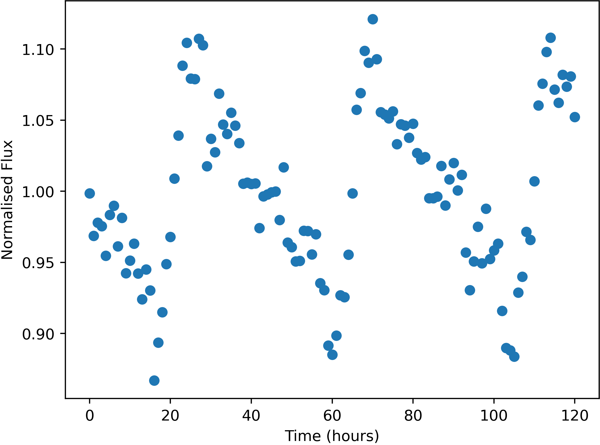

Some stars in the sky were found to change in apparent brightness over time, usually following a periodic trend.

Example of a variable star lightcurve - star FrontS120142
Units of the variable data are:
Uncertainties in this data (one standard deviation) are:
Here is a list of the flashes detected, with their approx. positions and number of photons detected. Positions are given by where they would appear in the relevant wide-field camera image. Positions are only accurate to 0.05 degrees (one standard deviation).
The X-Ray camera is sensitive to burts of more than 174 photons only.
| Name | Direction | X | Y | Photon-Count |
|---|---|---|---|---|
| FE01 | Left | 4.48 | -26.39 | 715 |
| FE02 | Bottom | -44.00 | 12.91 | 913 |
| FE03 | Bottom | -13.70 | -34.42 | 68354 |
| FE04 | Back | -28.51 | -14.11 | 48131 |
| FE05 | Top | -31.97 | 34.55 | 1156 |
| FE06 | Front | 13.74 | 5.13 | 60552 |
| FE07 | Top | 11.09 | 26.55 | 372 |
| FE08 | Front | -26.13 | 12.51 | 331 |
| FE09 | Top | 29.89 | 12.27 | 6897233 |
| FE10 | Front | -2.36 | -34.37 | 1979 |
| FE11 | Back | 10.12 | -20.07 | 539 |
| FE12 | Back | 10.42 | -20.55 | 570 |
| FE13 | Front | -25.94 | 12.88 | 362 |
| FE14 | Front | -1.91 | -8.70 | 2327 |
| FE15 | Front | -2.58 | -34.51 | 2126 |
| FE16 | Left | 9.69 | -12.77 | 1469 |
| FE17 | Back | -26.05 | -26.19 | 626 |
| FE18 | Front | -21.23 | 30.54 | 909 |
| FE19 | Front | -16.54 | 18.86 | 298 |
| FE20 | Front | -6.42 | 14.24 | 988 |
| FE21 | Right | -33.69 | 43.94 | 352 |
| FE22 | Back | 6.61 | -24.12 | 499 |
| FE23 | Top | -9.80 | 27.46 | 566 |
| FE24 | Right | 14.98 | -24.57 | 996 |
| FE25 | Top | -9.69 | 27.17 | 577 |
| FE26 | Right | -25.54 | -27.33 | 665 |
| FE27 | Back | -40.46 | 27.71 | 365 |
| FE28 | Bottom | -7.46 | 16.69 | 423 |
| FE29 | Front | -20.83 | 30.72 | 899 |
| FE30 | Top | -18.62 | 16.17 | 1434 |
| FE31 | Right | -20.17 | 15.74 | 590 |
| FE32 | Front | -37.47 | -18.56 | 85502 |
| FE33 | Right | -41.00 | -15.88 | 1512 |
| FE34 | Top | -9.91 | 27.71 | 568 |
| FE35 | Right | 0.70 | 10.23 | 20089120 |
| FE36 | Back | 11.41 | -20.94 | 350 |
| FE37 | Bottom | 22.13 | -29.97 | 422 |
| FE38 | Bottom | 16.51 | -10.42 | 66214 |
| FE39 | Right | -25.58 | -27.81 | 649 |
| FE40 | Front | 13.51 | -18.77 | 678 |
| FE41 | Bottom | -4.27 | 26.93 | 854 |
| FE42 | Back | -26.02 | -27.06 | 555 |
| FE43 | Bottom | -3.20 | 3.80 | 278 |
| FE44 | Right | 12.07 | 27.60 | 1627 |
| FE45 | Back | -19.06 | 31.83 | 259716 |
| FE46 | Back | 11.12 | -26.67 | 711 |
| FE47 | Right | 24.23 | 26.12 | 354 |
| FE48 | Back | 38.38 | 23.60 | 922 |
| FE49 | Back | 24.83 | 8.65 | 662 |
| FE50 | Front | -41.17 | -21.90 | 91863 |
| FE51 | Top | 9.39 | 5.05 | 493 |
| FE52 | Right | -20.47 | -39.69 | 753 |
| FE53 | Bottom | -9.96 | 12.62 | 808 |
| FE54 | Left | 9.10 | -13.30 | 1482 |
| FE55 | Right | 24.34 | 25.91 | 354 |